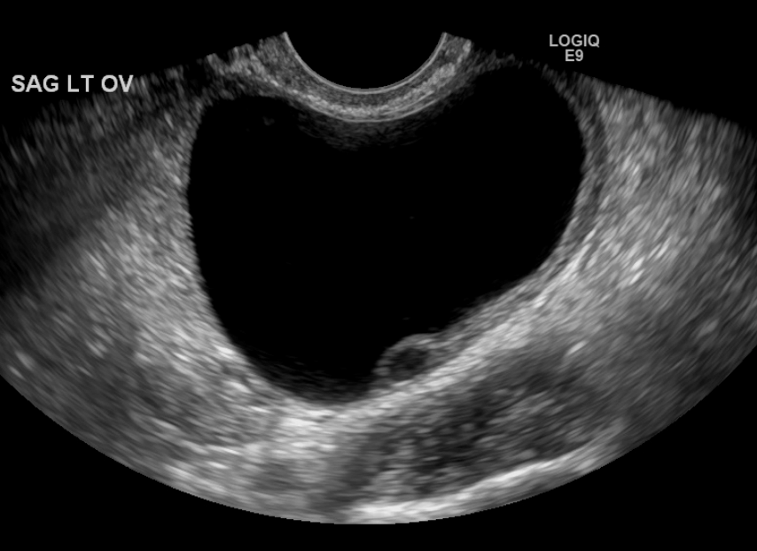

Ficha del catálogo
Quiste ovárico funcional
- Sistema
- Reproductor
- Modalidad
- US
- Región
- Pelvis femenina, anexos
- Dificultad
- Básico
Los quistes funcionales derivan del ciclo ovárico normal e incluyen el quiste folicular, cuando el folículo dominante no se rompe, y el quiste del cuerpo lúteo tras la ovulación. Son la causa más frecuente de masa anexial en mujeres en edad reproductiva y la mayoría involuciona espontáneamente en pocas semanas. Suelen ser asintomáticos, aunque pueden provocar dolor pélvico si se rompen o sangran.
Técnica
El ultrasonido transvaginal con Doppler color es la técnica de elección, idealmente realizado en la fase folicular temprana del ciclo. Se registra el tamaño máximo, las características de la pared y el contenido interno. La resonancia se reserva para lesiones indeterminadas o cuando se necesita caracterizar mejor el contenido hemorrágico.
Qué observar
- Lesión anexial redondeada de pared fina y contenido anecoico
- Tamaño máximo, con umbral orientativo de 3 centímetros para el folículo normal
- Patrón reticular de finas bandas entrecruzadas en el quiste hemorrágico
- Anillo vascular periférico del cuerpo lúteo en Doppler color
- Ausencia de nódulos murales con flujo interno
- Líquido libre en fondo de saco tras la rotura
Hallazgos
El quiste folicular aparece como una formación anecoica unilocular de pared imperceptible con refuerzo acústico posterior. El cuerpo lúteo muestra pared algo más gruesa e irregular con intenso flujo periférico circunferencial conocido como anillo de fuego. El quiste hemorrágico presenta ecos internos con patrón reticular en malla y a veces un coágulo retráctil de bordes cóncavos sin vascularización.
Perlas
El patrón reticular de finas líneas entrecruzadas junto a un coágulo con márgenes cóncavos y ausencia de flujo interno es característico del quiste hemorrágico y evita estudios innecesarios. El control ecográfico diferido tras seis a doce semanas confirma la resolución y es la maniobra diagnóstica más rentable.
Diagnóstico diferencial
- Endometrioma
- Muestra ecos internos homogéneos de baja intensidad en vidrio deslustrado, persiste en los controles y es hiperintenso en T1 con caída de señal en T2.
- Teratoma maduro
- Contiene grasa, calcificaciones y el nódulo de Rokitansky, con hallazgos ecográficos característicos que no varían con el ciclo.
- Cistoadenoma
- Es persistente, suele superar los 5 centímetros y puede presentar tabiques finos, sin cambios en controles seriados.
- Neoplasia ovárica maligna
- Presenta componentes sólidos vascularizados, tabiques gruesos, ascitis y no involuciona en el seguimiento.
Simuladores
- Hidrosálpinx plegado
- Quiste paratubárico
- Quiste de inclusión peritoneal
Por modalidad
- TC
- Se emplea de forma incidental y puede sobreestimar la relevancia de un hallazgo fisiológico, por lo que suele derivar a estudio ecográfico.
- US
- Permite caracterizar el contenido, valorar la vascularización periférica y documentar la resolución espontánea con controles seriados.
Protocolo
Ultrasonido transvaginal con transductor de alta frecuencia y vejiga vacía, complementado con abordaje transabdominal cuando la lesión es grande. Se mide en tres planos, se aplica Doppler color con ajustes de baja velocidad para detectar flujos lentos y se explora el fondo de saco de Douglas. El control se programa preferentemente en la fase folicular temprana de un ciclo posterior.
Clasificación
Los sistemas de estratificación de riesgo de masas anexiales por ultrasonido asignan las lesiones a categorías según su morfología y vascularización, situando los quistes uniloculares anecoicos y los hemorrágicos típicos en las categorías de riesgo muy bajo. Estos esquemas orientan la conducta entre alta sin seguimiento, control por imagen o valoración especializada.
Errores frecuentes
- Informar como masa sospechosa un cuerpo lúteo normal por su pared gruesa y su intenso flujo periférico
- Realizar el control ecográfico en la fase lútea, cuando pueden persistir estructuras fisiológicas
- Interpretar el coágulo retráctil de un quiste hemorrágico como nódulo sólido sin comprobar la ausencia de flujo

quiste funcional folicular cuerpo lúteo quiste hemorrágico anillo de fuego masa anexial ovario